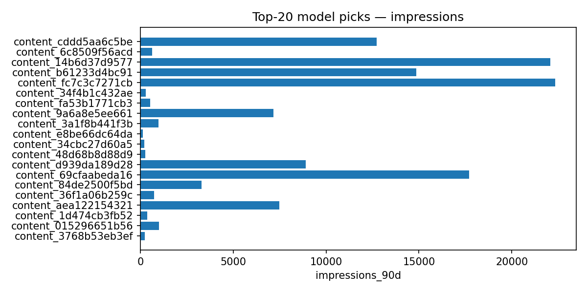
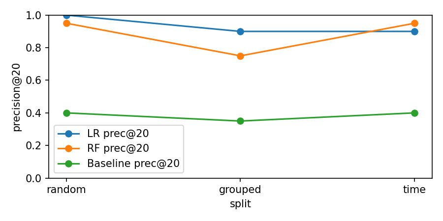

We ask: which content pages are currently declining and should be prioritized for editorial refresh? Using the FlyRank starter CSV (30k rows of content × 90-day aggregates) we trained interpretable ranking models (logistic regression and random forest) on visibility and engagement signals. Initial diagnostics revealed label leakage from short-window impression features, so we excluded trend_* and overlapping-window columns and re-evaluated with honest splits (stratified random, grouped-by-client, and time-aware). After cleaning, models continue to beat the transparent baseline on precision@K but with reduced discrimination (example: LR AUC ≈ 0.70, RF AUC ≈ 0.76 on the cleaned random split). The deliverable is a ranked queue (top-20) for human editorial review, an action playbook, and reproducible notebooks to verify the claims.
Impressions for the model's top-20 picks (higher = more visibility).

Precision@20 for baseline vs LR vs RF on the three honest splits (random, grouped, time-aware).

Top features driving the model after removing label-derived and short-window fields.

work/outputs/top20_for_playbook.csv (not committed; notebook recreates it).work/notebooks/w06_validation_audit.ipynb to see leakage checks and validation design.work/notebooks/w07_action_playbook.ipynb to reproduce the top‑20 and playbook exports.